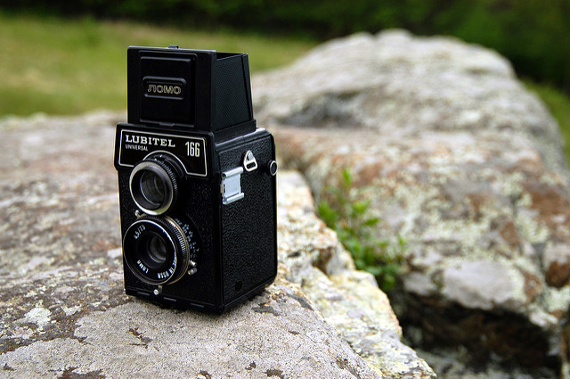
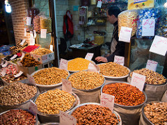

Travel
Welcome to my travel journal! Come with me while I explore places you've only ever read about. We'll journey to Diagon Alley and Neverland. You'll definitely be inspired to plan your own trip...and just get lost.
Food & Drink
Not only will you learn about all the attractions in town but let me tell you where to eat and drink too! Each of these places has their own unique cuisine and I'll help you find the best.